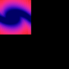

imagesetpixel
imagesetpixel — Fixe la valeur RVB d'un pixel dans une image précédemment ouverte ou créée.
Description
Opcode du greffon image. Ce greffon se trouve dans le répertoire des greffons et il doit être installé séparément. Le répertoire des greffons est ici : https://github.com/csound/plugins
Fixe la valeur RVB d'un pixel dans une image précédemment ouverte ou créée. On peut charger une image avec imageload. On peut créer un image vide avec imagecreate et la sauver avec imagesave.
Syntaxe
imagesetpixel iimagenum, ax, ay, ared, agreen, ablue
imagesetpixel iimagenum, kx, ky, kred, kgreen, kblue
Initialisation
iimagenum -- la référence de l'image. C'est une valeur retournée par imageload ou par imagecreate.
Exécution
ax (kx) -- position horizontale du pixel (un nombre flottant compris entre 0 et 1).
ay (ky) -- position verticale du pixel (un nombre flottant compris entre 0 et 1).
ared (kred) -- valeur de rouge du pixel (ramenée à un nombre flottant compris entre 0 et 1).
agreen (kgreen) -- valeur de vert du pixel (ramenée à un nombre flottant compris entre 0 et 1)
ablue (kblue) -- valeur de bleue du pixel (ramenée à un nombre flottant compris entre 0 et 1).
Exemples
Voici un exemple de l'opcode imagesetpixel. Il utilise les fichiers imagesetpixel.csd et imageOpcode02.png.
Exemple 464. Exemple de l'opcode imagesetpixel.
<CsoundSynthesizer> <CsOptions> ; Select audio/midi flags here according to platform -n ;no sound output </CsOptions> <CsInstruments> sr = 44100 ksmps = 32 0dbfs = 1 nchnls = 2 ; doesn't matter because there is no sound output ; by Menno Knevel 2021 ; image opcodes need a black canvas- black = no sound! giimageOLD imageload "imageOpcode02.png" ; load this image giimagew, giimageh imagesize giimageOLD ; get dimensions of imageOpcode02.png giimageNEW1 imagecreate giimagew,giimageh ; and use those same dimensions giimageNEW2 imagecreate giimagew,giimageh ; for 3 new images giimageNEW3 imagecreate giimagew,giimageh ; instr 1 ; copies imageOpcode02.png and transforms it kndx = 0 kx linseg 0, p3, 1 ; scans x-axis prints "\nwidth = %d pixels, heigth = %d pixels\n\n", giimagew, giimageh myloop: ky = kndx/(giimageh) ; y-axis krd, kgn, kbl imagegetpixel giimageOLD, kx, ky ; get pixels from 'old' image prints "\n--**giimageNEW1 zooms out**--\n" imagesetpixel giimageNEW1, kx*.9, ky*.5, krd, kgn, kbl prints "\n--**giimageNEW2 zooms in**--\n" imagesetpixel giimageNEW2, kx*rnd(10), ky*rnd(10), krd, kgn, kbl prints "\n--**giimageNEW3 zooms in and applies offset on y-axis**--\n\n" imagesetpixel giimageNEW3, kx*rnd(5), (ky*rnd(5)+.2), krd, kgn, kbl loop_lt kndx, 0.5, giimageh, myloop endin instr 2 imagesave giimageNEW1, "imageNEW1.png" ; save those 3 new images imagesave giimageNEW2, "imageNEW2.png" imagesave giimageNEW3, "imageNEW3.png" endin instr 3 imagefree giimageOLD ; unload all images imagefree giimageNEW1 imagefree giimageNEW2 imagefree giimageNEW3 endin </CsInstruments> <CsScore> i1 1 2 i2 2 1 i3 4 .1 e </CsScore> </CsoundSynthesizer>
Voici l'image imageOpcode02.png :

et voilà les nouvelles images imageNEW1.png, imageNEW2.png et imageNEW3.png :
